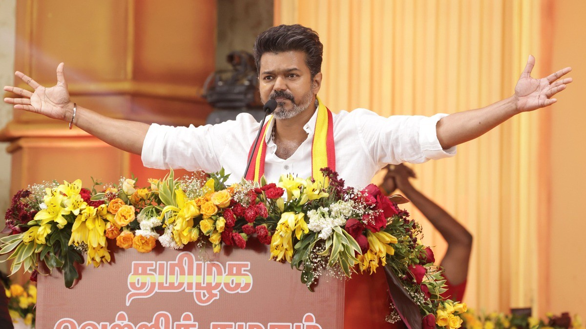

Current State Government

The Government of Tamil Nadu is responsible for implementing welfare schemes, improving infrastructure, developing public services and promoting economic growth across the state.
Government Information
- Current Ruling Party:Tamilaga Vettri Kazhagam (TVK) (leading a coalition backed by parties including Congress, VCK, and IUML).
- Chief Minister:C. Joseph Vijay (sworn into office on 10 May 2026).
- Election Year:2026 (The 17th Tamil Nadu Legislative Assembly election was conducted on 23 April 2026).